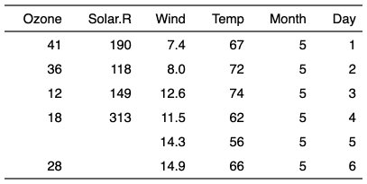
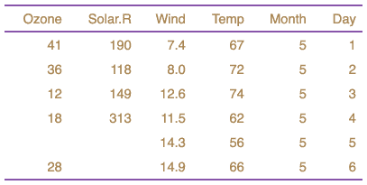

| set_flextable_defaults {flextable} | R Documentation |
The current formatting properties (see get_flextable_defaults())
are automatically applied to every flextable you produce.
Use set_flextable_defaults() to override them. Use init_flextable_defaults()
to re-init all values with the package defaults.
set_flextable_defaults( font.family = NULL, font.size = NULL, font.color = NULL, text.align = NULL, padding = NULL, padding.bottom = NULL, padding.top = NULL, padding.left = NULL, padding.right = NULL, border.color = NULL, background.color = NULL, line_spacing = NULL, table.layout = NULL, cs.family = NULL, eastasia.family = NULL, hansi.family = NULL, decimal.mark = NULL, big.mark = NULL, digits = NULL, na_str = NULL, nan_str = NULL, fmt_date = NULL, fmt_datetime = NULL, extra_css = NULL, fonts_ignore = NULL, theme_fun = NULL, post_process_pdf = NULL, post_process_docx = NULL, post_process_html = NULL, post_process_pptx = NULL ) init_flextable_defaults()
font.family |
single character value. When format is Word, it specifies the font to be used to format characters in the Unicode range (U+0000-U+007F). |
font.size |
font size (in point) - 0 or positive integer value. |
font.color |
font color - a single character value specifying a valid color (e.g. "#000000" or "black"). |
text.align |
text alignment - a single character value, expected value is one of 'left', 'right', 'center', 'justify'. |
padding |
padding (shortcut for top, bottom, left and right padding) |
padding.bottom, padding.top, padding.left, padding.right |
paragraph paddings - 0 or positive integer value. |
border.color |
border color - single character value (e.g. "#000000" or "black"). |
background.color |
cell background color - a single character value specifying a valid color (e.g. "#000000" or "black"). |
line_spacing |
space between lines of text, 1 is single line spacing, 2 is double line spacing. |
table.layout |
'autofit' or 'fixed' algorithm. Default to 'autofit'. |
cs.family |
optional and only for Word. Font to be used to format characters in a complex script Unicode range. For example, Arabic text might be displayed using the "Arial Unicode MS" font. |
eastasia.family |
optional and only for Word. Font to be used to format characters in an East Asian Unicode range. For example, Japanese text might be displayed using the "MS Mincho" font. |
hansi.family |
optional and only for Word. Font to be used to format characters in a Unicode range which does not fall into one of the other categories. |
decimal.mark, big.mark, digits, na_str, nan_str |
formatC arguments used by |
fmt_date, fmt_datetime |
formats for date and datetime columns as
documented in |
extra_css |
css instructions to be integrated with the table. |
fonts_ignore |
if TRUE, pdf-engine pdflatex can be used instead of xelatex or lualatex. If pdflatex is used, fonts will be ignored because they are not supported by pdflatex, whereas with the xelatex and lualatex engines they are. |
theme_fun |
a single character value (the name of the theme function to be applied) or a theme function (input is a flextable, output is a flextable). |
post_process_pdf, post_process_docx, post_process_html, post_process_pptx |
Post-processing functions that will allow you to customize the display by output type (pdf, html, docx, pptx). They are executed just before printing the table. |
a list containing previous default values.


Other functions related to themes:
get_flextable_defaults(),
theme_alafoli(),
theme_booktabs(),
theme_box(),
theme_tron_legacy(),
theme_tron(),
theme_vader(),
theme_vanilla(),
theme_zebra()
ft_1 <- qflextable(head(airquality)) ft_1 old <- set_flextable_defaults( font.color = "#AA8855", border.color = "#8855AA") ft_2 <- qflextable(head(airquality)) ft_2 do.call(set_flextable_defaults, old)